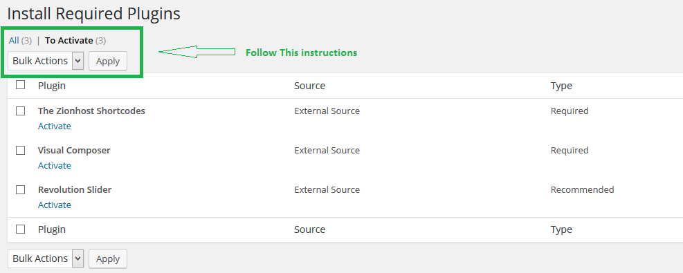
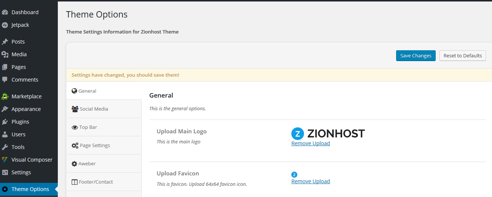
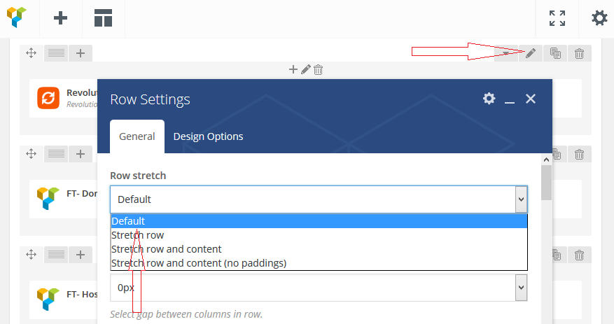
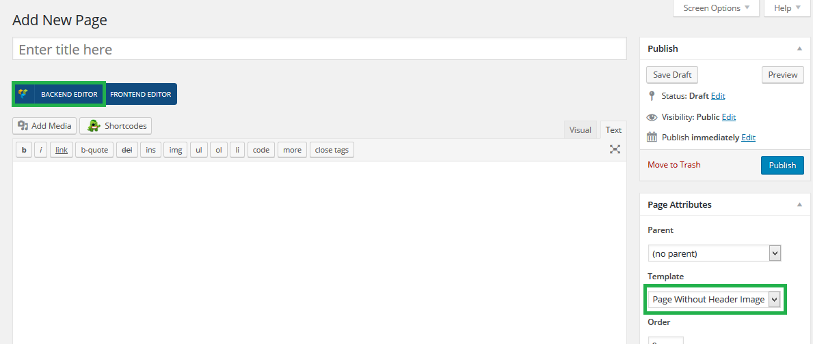
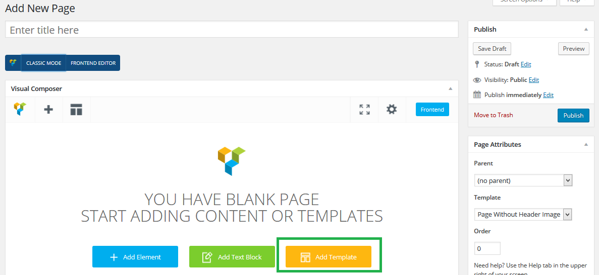
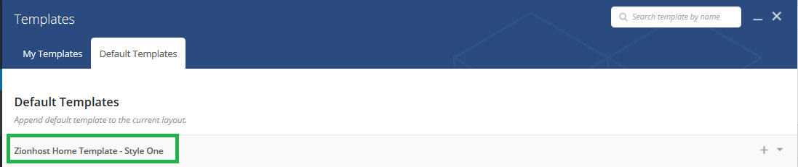
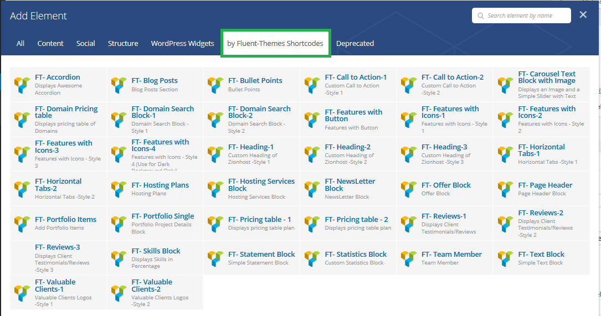

ZionHost - Web Hosting and Corporate WP Theme
- Created: 10/03/2016
- By: Fluent-Themes
- Demo URL: http://fluentTheme.com/wp/zionhost/
- Email Support: support@Zionhost
Thank you for purchasing our Theme!
To view more polished and organized Documentation of Zionhost Theme please Visit Here
We hope that you find all your questions regarding this Theme answered in this Documentation as much in details as possible. However, if you still need support, do not hesitate to contact us at our support forum for this Theme.
Faqs
1. How Can I update included Plugins of the Theme?
Theme bundled plugins can't be updated in traditional way. The bundled plugins don't have any license code and you will be able to run the plugins without the license code. You just need to install the plugins, no need to activate license. When you need to update the plugins to the latest version, you just need to download the latest version of the theme and find the plugin files in the 'zionhost --> framework --> plugins' folder. Remove your old plugin files from your server using ftp or cpanel and upload the new files there.
2. What does theme support include?
If you find any kind of bugs in the theme, you can contact theme support with your theme purchase code and our team will help you fix the bugs.
What is a bug? If you see your theme is not working like the demo preview pages even after you followed the instructions given below in the documentation, that is a bug. Again, if you see you are choosing an option from 'Theme-Options' but in the front-end you are not seeing any change as it is supposed to, then that is a bug. You should contact theme support immediately and our experts will solve the bugs for you.
But if you see the theme is working like the live preview, but you want something else (example: you want the logo at the right side instead of left side), then that is not a bug, and theme support can't help you in this. Our freelancer team can help you in this for customizing theme. They will charge you some fees depending on the depth of the customization you need. You need to ask for our freelancer team contact details to our theme support.
3. How to Setup WHMCS?
For setting up WHMCS, please read the 'Documentation' of whmcs to know how to setup the whmcs template into your installed whmcs. You should have a 'Documentation' folder in the WHMCS folder of your purchased files. Open that folder and open index.html file of that folder in a browser. You will have all the required instructions to setting up the whmcs template.
Installation
Themes Installation & Activation
Installing Zionhost Theme is quite easy. Basically install this Theme is almost the same as installing other Theme. This part will guide you to how install Zionhost Theme.
After downloading Zionhost package from Themeforest you need to extract those file, and then you will find zip file with name like zionhost.zip . This is main file of Zionhost Theme.
- Go to Appearance -> Themes on your WordPress Admin Dashboard
- Then click the Add New button at the top of the page and then choose Upload Theme option
- After that upload file zionhost.zip and click Install Now
- After finishing upload, click the Activate and right after installing themes you will be prompted to install required plugins. Below we will instruct you how to install the required plugins
Common Error during Installation
The error: "Are you sure you want to do this?"
If you are installing your theme from the WordPress theme installer, but get a message that says “Are you sure you want to do this?”, most likely your web server is configured with PHP settings that are too low to allow the theme ZIP file to upload. Specifically, PHP is configured to a maximum file upload size limit at 8 megabytes or less. The theme ZIP is about 25 megabytes in size. Thus, the web server is rejecting the upload. WordPress is giving you a rather ambiguous message in response. This is not a theme fault or bug. There two ways to solve this problem:
1. You can either get your web host to increase your PHP limits. Some hosting allows you change PHP values from htacess or PHP.ini Please check your help documents from provider.
Recommended PHP configuration limits are as follows:
max_execution_time = 18000
memory_limit = 128M
post_max_size = 32M
upload_max_filesize = 32M
2. You can upload your theme via an FTP client.
Required Plugins
Right after you finish activating Zionhost theme. You will notified to install required plugin for this themes.
You will get list (look at the image) of all required plugins that need to Install & Activate them. You can follow this image bellow to installing and activate all required plugins.

If the required plugins are activated, now you’re ready to create Awesome Stuff with Zionhost.
Themes & Plugins Update
Updating Themes
Installing the new version of theme, almost the same as installing new themes. You can update Zionhost theme by downloading a fresh copy from ThemeForest, deleting the current version you have on your server and uploading the new version.
Updating Required Plugins
Installing the new version of required plugin, almost the same as installing plugin previously. You can update the required plugin by remove the current version you have on your server and then go to Appearance -> Install Plugins to install the newer version.
Automatic Update
Envato provide plugin that enable automatic update for themes. You can download those plugin from here. You will just need to input your API key. For more detail about how to use envato toolkit, please follow this url.
Included Plugins
Plugin that we include are :
- The Zionhost Extensions
- Visual Composer
- Revolutions Slider
Theme Options
We have created Powerful Theme-Options for you so that you can customize your website with just a few clicks. Go to Theme-Options on your WordPress Admin Dashboard

General Settings
From here you can upload Logo and Favicon icon. Also there is one textarea field - Custom CSS. Custom CSS field is for using your own custom styles which will override the theme default styles.
From the Colors option you can choose a color for your website from here. There are ten built in colors:
- Blue (Default Color)
- Red
- Orange
- Olive
- Green
- Pink
- Violet
- Sea
- Light-blue
- Light-green
From the Website Width option you can choose Full-Width or Boxed Style. It is important to remember that - If you choose Boxed Style, do not forget to edit the Rows of your pages. Click on the edit icon of the Rows and select Default from the drop-down options of Row stretch. Otherwise you may see the pages sections are not properly styled into the Box.
Generally Stretch row and content (no paddings) is selected for the Full-Width pages.

Top Bar Settings
From here you can customize the following things of your Top Bar:
- Show/Hide Top Bar of your website
- Show/Hide Flag Images for Translated Pages
- Show/Hide Login/Register Links
- And the related fields if above things are Shown
Page Settings
From here you can customize the following things of the default pages and posts of your site:
- Upload Header background image
- Show/Hide Call to Action bar above Footer
- Sidebar position of Blog pages (Left or Right)
- Show/Hide Author section of single post page
Import/Export Settings
If you wish to Import/Export the saved settings of Theme-Options from one WordPress to another, then this Import/Export tab is highly useful for you. With a few clicks you can Import/Export the data of the Theme-options.
General Guidelines
Page Building with Visual Composer
Add New Page
Go to Pages -> Add New on your WordPress Admin Dashboard. And click on the BACKEND EDITOR. Also choose Page without Header Image Template to get the best view of Visual composer elements.

Load Pre-Built Template
Click on the Add Template and then click on Zionhost Home Template - Style 1 and wait for just a few seconds and you will see the magic. A page will be created similar to the demo homepage you see in the
live-preview of Zionhost Theme. (Note: If you haven't imported the demo xml file yet [we have described later how to import demo xml file], you may see some images are missing in the page. So, you should import the xml file first, or you should insert those missing images manually using the custom elements of Visual Composer.)
Now you can add/edit/remove the loaded elements with drag and drop functionality of Visual Composer.
Important Note: You may see Revolution Slider error at the front-end if you have not activated the Revolution slider plugin yet. If the plugin is activated, you may see the slider is not there yet. That means, you need to make a slider using the revolution slider plugin OR import slider zip files (you will find the slider zip files in the 'slider' folder of your purchased files) using the import option of the revolution slider plugin and then add that slider into the page using Drag and Drop functionality of Visual composer.


Use Custom Elements
There are around 40 custom elements which you can use to build your pages. Click on any element created by Fluent-Themes Shortcodes and you will have all the options you need to insert the element to your page nicely.

Creating Slider with Revolutions Slider Plugin
Find Slider Revolution menu in the wp admin dashboard. Click on that and you will have options to create a new slider. After creating a slider you will need to create and style the slides. After saving slides you can use the slider anywhere of your website. To use the slider with visual composer page builder you need to just insert the Revolutions Slider using drag and drop feature and select the slider from the given drop-down. For more information about styling a slider you can visit here: http://revolution.themepunch.com/
You can also import slider files (Slider files are included into the 'sliders' folder of your purchased theme files.) and use the ready-made slider as you can see in the live demo of the theme. To import slider you need to click on the Import Slider box as you see in the below screenshot and then upload the slider zip file (Slider zip files are included into the 'sliders' folder of your purchased theme files.).

Demo Data Import
In your purchased zip file you will get a .xml file of demo data. The file name is: Zionhost_demo_data.xml. If you want to import the demo data, then you just need to go to Tools -> Import on your WordPress Admin Dashboard. There you will see a list of import systems (blogger, blogroll etc). Choose WordPress from there and you will be asked to install the WordPress Importer plugin. After installing and activating the plugin you will need to upload our demo data xml file :Zionhost_demo_data.xml and click Import. That's it - All done - Have fun!
Translate Themes using the Poedit Program
Poedit is a common program which you can use to translate the theme. It’s available for free on poedit.net.
After you have installed Poedit, you can open it and select File > Open. Then select the zionhost.pot file from the theme you wish to translate which you can find in the /languages/ folder of Zionhost theme.
Then go through every line of text and translate it to your native language. Afterwards you can save as the catalog with your language code (for example es_ES.po) File > Save as . Normally Poedit automatically creates the .mo file and saves it, too.
The last step you have to do is to upload your created language files to /languages folder of Zionhost theme using FTP.
Support
If you need some help or found a bug or issue with the Theme, You can contact us at support@zionhost and we will respond to you within a quick turnaround time.
Changelogs
- Initial Release
Sources & Credits
- jQuery - http://jquery.com
- Visual Composer - Visual Composer
- Redux Framework - Redux Framework
- Font-Awesome - http://fortawesome.github.io/Font-Awesome/
Social Media Settings
Here you can put your social media urls. Don't forget to use http:// before any urls. These Social media urls are effective in the Top Bar section and in the footer Social Media section.